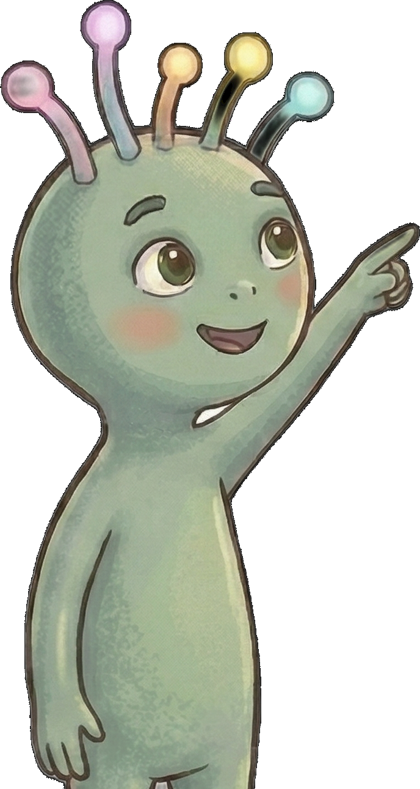

Meet Yubuu
Will you help me understand feelings?
I travel the galaxy visiting planets where creatures feel all sorts of things I don't understand yet. I'm not a teacher — just curious. Play one round with me and show me how a feeling works.
Step 1 — the wheel
Give the wheel a spin.
Whatever feeling it lands on becomes yours for the round — just like taking a magnetic face from the wooden wheel. There is no right or wrong one to get.
Your feeling today
Do you already know this feeling?
Step 2 — a question
Draw a question card.
?tap to draw
Tap the card.
Step 3 — a moment
Does your feeling fit this?
Step 4 — give Yubuu a face
Your feeling:

Step 5 — what you need
What would help you right now?
That's one round
A feeling, named — and what it needs.
You spun a feeling, sat with it, saw that others might feel differently about the same moment, and found what it needs. Nothing was scored. Nothing was wrong.
In a Kita, a pedagogue guides this round with two to four children at once — spinning, drawing, and placing in turn. The wheel doesn't teach the "right" feeling. It gives children the words for what they already carry, and a calm place to say it out loud.